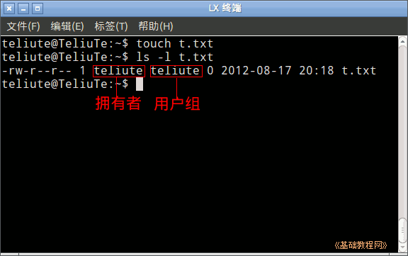
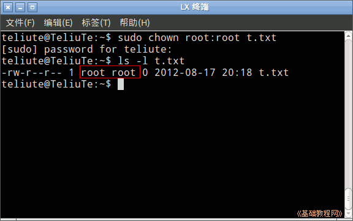
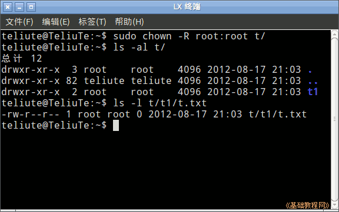

Ubuntu 命令行教程
作者：TeliuTe 来源：基础教程网
十三、chown 更改拥有者命令 返回目录 下一课有些文件只有所有者可以操作，所以要更改它的拥有者；
1、chown 更改拥有者命令
1）打开终端，显示当前为主文件夹，用 touch t.txt 命令创建一个文件 t.txt，
用 ls -l t.txt 查看一下，文件的属性信息；

2）输入命令 sudo chown root:root t.txt 可以将文件的所有者和用户组改为 root，这时原来的所有者将变成其他用户；

3）这时原来的用户只有读权限(r)，要想更改权限的话就得切换到管理员身份，但此时还可以删除它；
4）要更改目录文件夹的属主，加上 -R 参数即可，创建 t/t1/t.txt ，然后用 sudo chown -R root:root t/ 命令更改目录和子目录的属主；

本节学习了chown 更改拥有者命令的基础知识，如果你成功地完成了练习，请继续学习下一课内容；
本教程由86团学校TeliuTe制作|著作权所有
基础教程网：http://teliute.org/
美丽的校园……
转载和引用本站内容，请保留版权信息和本站链接。